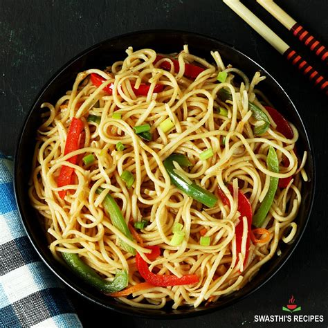

Hakka Noodles Recipe.

Description
Hakka noodles are Indian-Chinese style noodles made with unleavened refined wheat flour. These are boiled al dente and then stir-fried in a Chinese wok with oil, vegetables & soya sauce. The term "Hakka noodles" can refer to both the final dish and the type of noodles used.
Ingredient
- Finely chop garlic and ginger (optional).
- Separate the greens and whites of spring onions.
- Slice onions.
- Chop green chili (optional).
- Julienne carrots and bell peppers.
- Finely chop French beans and cabbage (optional).
Steps
Step 1 Boil the Noodles:
- Bring 8 cups of water to a rolling boil in a large pot.
- Add the Hakka noodles and cook until "al dente" (slightly undercooked).
- Drain the noodles in a colander and rinse them under running water.
- Add a teaspoon of oil to the noodles and toss to prevent them from sticking together.
Step 2 Prepare the Sauce:
In a small bowl, mix together soya sauce, hot sauce (optional), vinegar, and chili oil (optional).
Step 3 Stir-Fry the Noodles:
- Heat oil in a wok on high heat.
- Add the garlic and ginger and fry for 30 seconds.
- Add the green chili (optional) and the white parts of the spring onions and sauté for another 30 seconds.
- Add the onions and fry for 1 minute.
- Add the rest of the vegetables (carrots, bell peppers, cabbage, and beans) and stir-fry for 2 minutes until they are fragrant but still crunchy.
- Add the cooked noodles, salt, and the prepared sauce.
- Toss everything well and stir-fry for another 2 minutes.
- Taste and adjust the salt and sauces if needed.
- Add ground pepper and the green parts of the spring onions.
Home